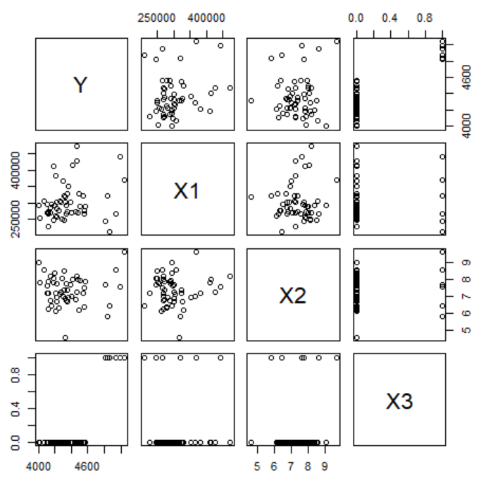
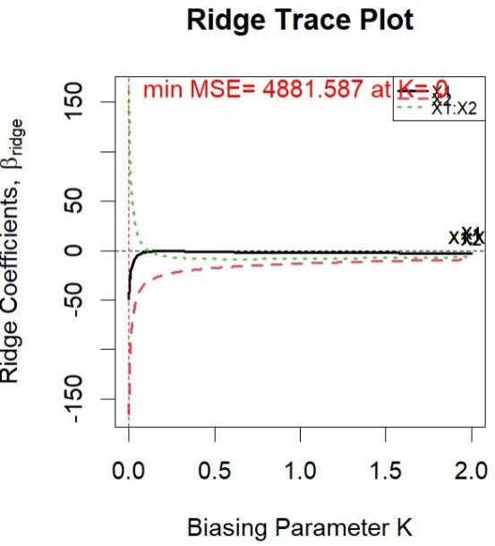

Drill · Archetype 5 — Which tool, and why
อาจารย์ถาม "ต้องใช้เครื่องมืออะไร" บ่อยมาก — ให้อาการ (VIF สูง, overdispersion, plot บอกโค้ง, ข้อมูลนับซ้ำ) แล้วให้เลือกวิธีแก้/โมเดลที่ถูกต้อง พร้อมเหตุผล เพราะคำตอบที่ไม่มีเหตุผลอาจารย์ให้คะแนนไม่เต็ม
| อาการ | เครื่องมือ |
|---|---|
| Residual เป็นกรวย (non-constant variance) | Weighted Least Squares |
| Residual โค้ง / ไม่ปกติ | Box-Cox → transform Y |
| Residual มีแนวโน้มตามเวลา | Durbin-Watson → Cochrane-Orcutt |
| VIF สูง (multicollinearity) | Ridge regression |
| เลือกจากโมเดลผู้สมัครหลายตัว | Stepwise AIC/BIC หรือ best-subset + Cp/adj-R² |
| เทียบ full vs nested reduced (OLS) | Extra sum-of-squares F-test |
| เทียบ nested GLM สองตัว | Likelihood Ratio Test (LRT) |
| Binary response, \(n_i=1\) ทุกแถว | Logistic + Hosmer-Lemeshow (ห้าม deviance GOF) |
| Count, dispersion ≫ 1 | Quasi-Poisson หรือ Negative Binomial |
| Count ที่ exposure ไม่เท่ากัน | offset(log(exposure)) |
| Response เป็นกลุ่มไม่มีลำดับ | Multinomial (baseline-category logit) |
| Response เป็นกลุ่มมีลำดับ | Proportional odds (polr) + ตรวจด้วย Brant test |
| ข้อมูลซ้ำ/เป็นกลุ่ม/ไม่อิสระ | Linear Mixed Model |
โมเดลความดันหลอดเลือดปอด Y ~ X1*X2 ได้ VIF ดังนี้ ต้องใช้เครื่องมือใดแก้ และเพราะเหตุใด
"Yes, there is a serious multicollinearity problem." → เครื่องมือที่อาจารย์ใช้แก้ต่อคือ ridge regression
เหตุผล: กฎทั่วไปคือ VIF > 10 ถือว่ามีปัญหา — ที่นี่ X2 (11.64) และพจน์ X1X2 (22.47) เกินเกณฑ์ชัดเจน (X1 เองยัง 5.43 ต่ำกว่าเกณฑ์แต่ก็เริ่มสูง) VIF สูงมาจากตัวแปรอิสระสัมพันธ์กันเอง (พจน์ interaction สัมพันธ์กับพจน์เดี่ยวโดยธรรมชาติ) ทำให้ SE ของสัมประสิทธิ์พองตัว ประมาณค่าไม่แม่น
Ridge เพิ่มพจน์ลงโทษ \(\lambda\sum\beta_j^2\) เข้าไปในเป้าหมาย ซึ่งบีบสัมประสิทธิ์ให้เล็กลงและเสถียรขึ้นแม้ X จะสัมพันธ์กันเอง โดยแลกกับ bias เล็กน้อยเพื่อลด variance ลงมาก
เสนอให้ตัดตัวแปรทิ้งตรง ๆ — ใช้ได้ในบางกรณีแต่ไม่ใช่สิ่งที่อาจารย์สอนสำหรับโจทย์นี้ เพราะ X1, X2 ทั้งคู่มีนัยสำคัญและมีความหมายทางคลินิก การตัดทิ้งเสียข้อมูล ridge จึงเป็นทางเลือกที่รักษาตัวแปรทั้งหมดไว้
สับสน VIF สูงกับ leverage สูง — VIF วัดความสัมพันธ์ระหว่างตัวแปรอิสระด้วยกัน ส่วน leverage วัดความผิดปกติของค่า X ของเคสหนึ่ง ๆ คนละมิติกัน
โมเดล Poisson นับโคโลนี salmonella ให้ dispersion parameter ดังนี้ ต้องทำอย่างไรต่อ
dispersion ≈ 4.13 (มากกว่า 1 หลายเท่า) และ GOF test p-value = 1.45×10⁻⁶ (<0.05 → โมเดลไม่ fit) — สรุปว่า Poisson มี overdispersion ชัดเจน ("the model does not fit the data at the 5% level of significance" — คำตัดสินของอาจารย์)
ทางแก้: quasi-Poisson (ปรับ SE ด้วย \(\sqrt{\text{dispersion}}\) โดยไม่เปลี่ยน point estimate) หรือ Negative Binomial (เปลี่ยนตัวแบบการแจกแจงไปเลย ให้ NB มีพารามิเตอร์ \(\theta\) รับ overdispersion ในตัว) — อาจารย์แสดงทั้งสองวิธีในโจทย์นี้แล้วให้เปรียบเทียบ
เพิกเฉยปัญหาแล้วเชื่อ p-value จาก Poisson ธรรมดาต่อไป — SE ที่เล็กเกินจริงทำให้ตัวแปรที่จริงไม่มีนัยสำคัญดูมีนัยสำคัญ
โมเดลจำนวนของเสียตามความเร็วเครื่องจักร lm(Y~X) ให้ residual plot รูปกรวย (แคบที่ X น้อย กว้างที่ X มาก) จงบอกขั้นตอนแก้แบบเป็นระบบที่อาจารย์สอน (ไม่ใช่แค่ชื่อเครื่องมือ)
ขั้นตอนที่อาจารย์สอน (Assignment 3 ข้อ 2):
e2 <- resid(model)^2varfn <- lm(e2~X)w <- 1/fitted(varfn) — จุดที่แปรปรวนสูง ได้น้ำหนักต่ำlm(Y~X, weights=w) ได้ weighted least squares estimatesเครื่องมือคือ Weighted Least Squares — หลักการคือให้จุดที่เชื่อถือได้มาก (แปรปรวนต่ำ) มีน้ำหนักในการฟิตมากกว่าจุดที่แปรปรวนสูง
บอกแค่ "ใช้ WLS" โดยไม่รู้ที่มาของน้ำหนัก — อาจารย์ให้คะแนนที่กระบวนการ ไม่ใช่แค่ชื่อ
สำหรับแต่ละสถานการณ์ จงระบุ (1) ตระกูลโมเดล และ (2) link function ที่เหมาะสม:
cbind(หาย, ไม่หาย) การตีความสัมประสิทธิ์เหมือนข้อ 1 ทุกประการ ต่างแค่รูปแบบข้อมูลข้อ 4 ตอบเป็น multinomial (nominal) — เสียข้อมูลเรื่องลำดับ ถ้าโจทย์บอกลำดับมาชัด (มาก→น้อย) ต้องใช้ ordinal เสมอ เว้นแต่ตรวจสอบด้วย Brant แล้วพบว่า proportional odds ไม่ถือ จึงค่อยถอยไปใช้ multinomial
ทดลองพิษวิทยา วัด "เวลารอดชีวิต" ของหนู (ค่าบวกต่อเนื่อง เบ้ขวาแรง มีค่าที่สูงผิดปกติเป็นหางยาว) หลัง Box-Cox แนะนำ \(\lambda \approx -1\) จงเสนอว่าควรใช้ GLM ตระกูลใด พร้อมเหตุผล
ข้อมูลบวกต่อเนื่องเบ้ขวาแรง ไม่เหมาะกับ Gaussian OLS ตรง ๆ — ตระกูลที่ออกแบบมาสำหรับข้อมูลลักษณะนี้คือ Gamma GLM หรือ Inverse Gaussian GLM
เหตุผลที่ \(\lambda \approx -1\) ชี้ไปทาง Inverse Gaussian โดยเฉพาะ: canonical link ของ Inverse Gaussian คือ \(g(\mu) = 1/\mu^2\) (หรือใช้ inverse link \(1/\mu\) ก็ได้) ซึ่งตระกูลนี้ตั้ง variance function เป็น \(V(\mu)=\mu^3\) เหมาะกับข้อมูลที่เบ้ขวารุนแรงกว่า Gamma (\(V(\mu)=\mu^2\)) — สอดคล้องกับที่ Box-Cox แนะนำการแปลงที่รุนแรงกว่า log
อาจารย์เองให้ลองทั้งสองแบบในโจทย์นี้ (A9 ข้อ 3) แล้วเทียบ deviance/AIC เพื่อตัดสินว่าตัวใดฟิตดีกว่า
เสนอให้ log transform แล้วใช้ OLS ต่อไป — ใช้ได้ในทางปฏิบัติแต่ไม่ตรงกับสิ่งที่อาจารย์สอนในบทนี้ (Other GLMs) ซึ่งต้องการให้แก้ปัญหาด้วยการเลือกตระกูลการแจกแจงที่เหมาะสม ไม่ใช่ดัดข้อมูลให้เข้ากับ Gaussian
สถานะปอดคนงานเหมือง (normal < mild < severe) ฟิตทั้ง multinomial (baseline-category) และ proportional odds ได้ AIC ใกล้กัน (425.4 vs 422.9) พร้อมผล Brant test ด้านล่าง จงตัดสินว่าโมเดลใดเหมาะสมกว่า โดยไม่ใช้การทดสอบทางสถิติเพิ่มเติม
"The model [proportional odds] is more appropriate because (1) The nature of the response variable is ordinal (2) The proportional odds assumption holds (as shown in [the Brant test])."
เหตุผลสองชั้น: (1) เชิงทฤษฎี — สถานะ normal < mild < severe มีลำดับโดยธรรมชาติ การใช้ ordinal จึงตรงกับโครงสร้างข้อมูลมากกว่า และประหยัดพารามิเตอร์กว่า (proportional odds ใช้ slope ร่วมกันข้าม J−1 สมการ ขณะที่ multinomial ต้องมี slope แยกทุกสมการ) (2) เชิงประจักษ์ — p-value ของ Brant test = 1 (สูงมาก) จึงไม่ปฏิเสธ \(H_0\): "Parallel Regression Assumption holds" แปลว่าไม่มีหลักฐานคัดค้าน assumption ของ proportional odds
เมื่อทั้งทฤษฎีสนับสนุนและ assumption ผ่าน → เลือก proportional odds
เลือกจาก AIC เพียงอย่างเดียว (422.9 < 425.4 จึงเลือก ordinal) — แม้จะได้คำตอบถูกแต่เหตุผลไม่ครบ อาจารย์ต้องการให้อ้างทั้งธรรมชาติของข้อมูลและผล Brant test ไม่ใช่แค่ตัวเลขเดียว โจทย์บอกชัดว่า "without performing any test" เพิ่มเติม — คือให้ใช้เหตุผลที่มีอยู่แล้ว ไม่ใช่ไปคำนวณอะไรใหม่
อ่าน Brant test ผิดทิศทาง — \(H_0\) ของ Brant คือ "assumption holds" (คนละทิศกับ GOF test ทั่วไปที่ \(H_0\) มักเป็น "no effect") p-value สูงคือข่าวดีสำหรับ proportional odds ในกรณีนี้
ข้อมูล salmonella มี overdispersion ฟิตได้ทั้ง quasi-Poisson และ Negative Binomial แล้วทำ GOF test กับ NB ได้ผลนี้ (เทียบกับ Poisson ธรรมดาที่ GOF p-value = 1.45×10⁻⁶) จงตัดสินว่าโมเดลใดเหมาะสมกว่า
"Due to the goodness-of-fit test in part (f), negative binomial model is preferred."
เหตุผล: GOF test ของ NB ให้ p-value = 0.2828 (>0.05) → ไม่ปฏิเสธ \(H_0\) ว่าโมเดลฟิตข้อมูลได้ดี ต่างจาก Poisson ธรรมดาที่ p-value = 1.45×10⁻⁶ (ปฏิเสธขาด — ฟิตไม่ดี)
ทำไม NB ทำได้ดีกว่า quasi-Poisson ในแง่นี้: quasi-Poisson ไม่มี full likelihood จึงทำ formal GOF test แบบนี้ไม่ได้โดยตรง (ได้แค่ปรับ SE) ส่วน NB เป็นการแจกแจงเต็มรูปแบบ จึงตรวจสอบ fit ได้อย่างเป็นทางการและให้คำตอบที่ชัดเจนกว่า
บอกว่าทั้งสองวิธี "เหมือนกัน เพราะแก้ overdispersion ได้เหมือนกัน" — จริงที่ทั้งคู่แก้ SE ได้ แต่รูปแบบของ variance function ต่างกัน: quasi-Poisson ให้ \(\text{Var}(Y)=\phi\mu\) (เชิงเส้นกับ mean) ส่วน NB ให้ \(\text{Var}(Y)=\mu+\kappa\mu^2\) (กำลังสองกับ mean) — ถ้าข้อมูลจริงมีความแปรปรวนโตเร็วกว่าเชิงเส้น NB จะจับได้แม่นกว่า ซึ่งคือสิ่งที่เกิดในโจทย์นี้
ต้องการทดสอบว่าตัวแปรกลุ่มหนึ่ง (2 ตัว) ควรอยู่ในโมเดลหรือไม่ จงบอกว่ากรณี (ก) full model เป็น lm() ธรรมดา กับ (ข) full model เป็น glm(family=binomial) ควรใช้เครื่องมือทดสอบตัวใด และสองเครื่องมือนี้สัมพันธ์กันอย่างไร
(ก) OLS: extra sum-of-squares F-test — anova(reducedmodel, fullmodel) เทียบ \(SSE\) ของสองโมเดลแล้วสร้างสถิติ F
(ข) GLM: Likelihood Ratio Test (LRT) — เทียบ deviance ของสองโมเดล \(D_{\text{reduced}}-D_{\text{full}} \sim \chi^2_{q}\) โดย q คือจำนวนพารามิเตอร์ที่ต่างกัน
ความสัมพันธ์: ทั้งสองคือแนวคิดเดียวกัน (เทียบ full vs reduced) แต่ต่างเครื่องมือเพราะ OLS มี exact finite-sample F-distribution ให้ใช้ ส่วน GLM ทั่วไปไม่มี (นอกจาก Gaussian) จึงใช้ทฤษฎี asymptotic ของ likelihood แทน (LRT ~ \(\chi^2\) เมื่อ n ใหญ่)
ใช้ extra-SS F-test กับ GLM โดยตรง — ใช้ไม่ได้ในกรณีทั่วไปเพราะ GLM (ยกเว้น Gaussian) ไม่มี exact F-distribution ต้องใช้ LRT แทน
โมเดลมะเร็งเต้านม (681 เคส, response 0/1 รายบุคคล) กับโมเดลผีเสื้อกลางคืน (7 แถว ที่แต่ละแถวคือ ผลรวมของผีเสื้อหลายสิบตัวต่อระยะทาง) ทั้งคู่เป็น binomial logistic แต่ใช้ GOF test คนละตัว จงอธิบายว่าทำไม
มะเร็งเต้านม → Hosmer-Lemeshow test เพราะข้อมูลไม่ได้จัดกลุ่ม — แต่ละแถวคือผู้ป่วย 1 คน (\(n_i=1\)) ทำให้ residual deviance ไม่ตามการแจกแจง \(\chi^2\) โดยประมาณอีกต่อไป (เงื่อนไข asymptotic ของ deviance GOF ต้องการ \(n_i\) ใหญ่ในแต่ละกลุ่ม) Hosmer-Lemeshow แก้ปัญหานี้โดยจัดกลุ่มผู้ป่วยตามความน่าจะเป็นที่ทำนายได้เอง แล้วเทียบ observed vs expected ในแต่ละกลุ่ม
ผีเสื้อ → deviance GOF ตรง ๆ เพราะข้อมูลจัดกลุ่มอยู่แล้ว — แต่ละแถวคือผลรวมของผีเสื้อหลายสิบตัวที่ระยะทางเดียวกัน (\(n_i\) ใหญ่) เงื่อนไข asymptotic จึงใช้ได้ deviance เทียบกับ \(\chi^2_{n-p}\) ได้ตรงไปตรงมา
กฎที่ใช้ตัดสิน: \(n_i=1\) ทุกแถว (ungrouped) → Hosmer-Lemeshow; \(n_i\) ใหญ่พอในแต่ละแถว (grouped) → deviance GOF ปกติ
ใช้ deviance GOF กับข้อมูลมะเร็งเต้านมตรง ๆ — ค่า p-value ที่ได้จะไม่น่าเชื่อถือ เพราะ asymptotic ไม่เข้าเงื่อนไข (นี่คือเหตุผลที่โจทย์ A7(b) สั่งให้ใช้ Hosmer-Lemeshow โดยเฉพาะ)
นักศึกษาคนหนึ่งใช้ best-subset selection เลือกโมเดลด้วยเกณฑ์ RMSE ได้ผลว่าโมเดลเต็ม (ใส่ทุกตัวแปร) ให้ RMSE ต่ำสุดเสมอ จึงสรุปว่า "โมเดลเต็มคือโมเดลที่ดีที่สุดสำหรับพยากรณ์อนาคต" จงวิจารณ์ข้อสรุปนี้
"Disagree because the RMSE is calculated based on the same dataset to fit the model. It [the] model could overfit the data but might not have ability to predict unseen data well."
เหตุผล: RMSE ที่คำนวณจากข้อมูลชุดเดียวกับที่ใช้ฟิตโมเดล (in-sample) ลดลงเสมอเมื่อเพิ่มตัวแปร — นี่คือคุณสมบัติทางคณิตศาสตร์ล้วน ๆ ของ \(R^2\)/RMSE ไม่ใช่หลักฐานว่าโมเดลนั้นทำนายอนาคตได้ดี โมเดลเต็มอาจoverfit คือจับ noise เฉพาะของข้อมูลชุดนี้ไปด้วย แล้วทำนายข้อมูลใหม่ได้แย่กว่า
เกณฑ์ที่เหมาะกับการเลือกโมเดลเพื่อทำนายมากกว่าคือ AIC/BIC/Cp (ที่มีพจน์ลงโทษความซับซ้อน) หรือดีที่สุดคือcross-validation / test-set RMSE ซึ่งประเมินบนข้อมูลที่โมเดลไม่เคยเห็น
เห็นด้วยกับข้อสรุปเพราะ "ตัวเลขต่ำสุดจริง" — ตัวเลขต่ำสุดในข้อมูลที่ใช้ฝึกไม่ได้แปลว่าดีที่สุดสำหรับข้อมูลใหม่ เป็นกับดักที่พบบ่อยเมื่อใช้เกณฑ์ที่ไม่มีพจน์ลงโทษความซับซ้อน (RMSE, \(R^2\), \(R^2_{adj}\) ในบางกรณี) เทียบกับที่มี (AIC, BIC, Cp)
นักวิจัยเก็บข้อมูลน้ำหนักหนู 27 ตัว วัดซ้ำ 5 สัปดาห์ (135 แถว) แล้วฟิต lm(wt ~ weeks*treat) ธรรมดา ได้ p-value ของ treatment ต่ำมาก จึงสรุปว่า treatment มีผลอย่างมีนัยสำคัญ จงวิจารณ์วิธีการนี้
ผิดที่การเลือกใช้ OLS ธรรมดา — ข้อมูล 135 แถวมาจากหนูจริงแค่ 27 ตัว (5 แถวต่อตัว) การวัดซ้ำในสัตว์ตัวเดียวกันไม่เป็นอิสระต่อกัน (independence assumption ของ OLS พัง) OLS จะนับข้อมูลซ้ำเกินจริงว่ามี 135 การสังเกตอิสระ ทำให้ SE เล็กเกินไปและ p-value เล็กเกินจริง — ข้อสรุปเรื่องนัยสำคัญจึงเชื่อถือไม่ได้
วิธีที่ถูกต้องคือ linear mixed model ใส่ random effect ของหนูแต่ละตัว (เช่น lmer(wt~weeks*treat+(weeks|subject))) เพื่อแยกความแปรปรวนระหว่างหนูออกจากความแปรปรวนที่แท้จริงของ treatment แล้วทดสอบ fixed effect ด้วย Kenward-Roger approximation แทน t-test ธรรมดา
บอกว่าปัญหาคือ "ตัวอย่างเล็กเกินไป" — ผิดประเด็น ปัญหาไม่ใช่ขนาดตัวอย่างแต่คือโครงสร้างการไม่เป็นอิสระ แม้จะมีหนู 1,000 ตัว ถ้าไม่ใส่ random effect ปัญหาเดิมก็ยังอยู่
ก่อนฟิต MLR ของร้านค้าปลีก (Y=ชั่วโมงแรงงาน, X1=กล่องที่ส่ง, X2=ต้นทุนแรงงานทางอ้อม%, X3=มีวันหยุดหรือไม่) ได้ scatterplot matrix นี้ จงบอกว่าควรระวังอะไรก่อนตีความสัมประสิทธิ์ของ MLR ที่จะฟิตต่อไป

อาจารย์อ่านภาพนี้ว่า: "X1 has positive relationship with Y. The relationship between X2 and Y is not obvious. X3 has positive relationship with Y. Particularly, the mean response is higher during the weeks that have a holiday."
สิ่งที่ต้องระวังก่อนตีความ MLR ต่อ: (1) ความสัมพันธ์ระหว่าง X2 กับ Y ไม่ชัดเจน จาก scatterplot เพียงอย่างเดียว — อาจกลายเป็นมีนัยสำคัญหรือไม่มีก็ได้เมื่อควบคุมตัวแปรอื่น (ผลจริง: X2 ไม่มีนัยสำคัญในโมเดลเต็ม, p=0.5712) (2) ต้องเช็คด้วยว่าแผงระหว่าง X1, X2, X3 เองไม่มีความสัมพันธ์กันแรงเกินไป ก่อนเชื่อ VIF/สัมประสิทธิ์ (ถ้า X สัมพันธ์กันเอง MLR อาจให้ผลชวนสับสน)
สรุปจาก scatterplot matrix ว่า X2 "ไม่มีผลต่อ Y แน่นอน" — scatterplot ดิบยังไม่ควบคุมตัวแปรอื่น เป็นแค่จุดเริ่มต้นสำรวจข้อมูล ไม่ใช่ข้อสรุปสุดท้าย ต้องรอผลจาก MLR
หลังพบ multicollinearity รุนแรงในข้อ 1 อาจารย์ฟิต ridge regression แล้วพล็อต ridge trace (สัมประสิทธิ์แต่ละตัวเทียบกับ k) จงอธิบายว่าใช้ภาพนี้เลือกค่า k อย่างไร

เหตุผลจากภาพ: ที่ k ใกล้ 0 (ไม่ลงโทษเลย = OLS) เส้นสัมประสิทธิ์แกว่งรุนแรงและห่างกันมาก — สะท้อนความไม่เสถียรจาก multicollinearity ที่เจอในข้อ 1 พอ k เพิ่มขึ้น เส้นทั้งหมดบีบเข้าหากันและเริ่มราบอย่างรวดเร็ว
หลักการเลือก k: เลือกค่า k ที่น้อยที่สุดเท่าที่จะทำให้เส้นสัมประสิทธิ์เริ่มเสถียร (เส้นเกือบราบ ไม่แกว่งอีกต่อไป) — ไม่ใช่เลือก k ใหญ่ที่สุด เพราะ k ที่มากเกินไปจะบีบสัมประสิทธิ์เข้าใกล้ 0 ทั้งหมด (bias สูงเกินไป) จุดที่เหมาะสมคือจุดแรกที่กราฟ "นิ่ง" นับจากซ้าย
เลือก k ใหญ่สุดในกราฟ เพราะ "เส้นราบที่สุด" — bias จะสูงเกินไปจนสัมประสิทธิ์เกือบเป็น 0 ทั้งหมด เสียความหมายทางสถิติไปเปล่า ๆ ต้องหาจุดสมดุล ไม่ใช่สุดขั้ว
มีเกณฑ์คัดเลือกโมเดล 4 แบบ: RMSE, \(R^2_{adj}\), Cp, BIC จงระบุว่าเกณฑ์ใดลงโทษความซับซ้อนของโมเดลแรงที่สุด และเพราะเหตุใดสิ่งนี้จึงสำคัญเมื่อโมเดลมีตัวแปรเยอะ
BIC ลงโทษแรงที่สุด — พจน์ลงโทษของ BIC คือ \((p+1)\log(n)\) เทียบกับ AIC ที่ \(2(p+1)\) เมื่อ \(n>7\) ค่า \(\log(n) > 2\) เสมอ ทำให้ BIC ลงโทษการเพิ่มพารามิเตอร์แรงกว่า AIC โดยอัตโนมัติ และแรงกว่า RMSE/\(R^2\) มาก (ซึ่งแทบไม่ลงโทษเลย ดูข้อ 10)
ทำไมสำคัญ: ยิ่งชุดข้อมูลมีตัวแปรผู้สมัครเยอะ โอกาสที่ตัวแปรไม่เกี่ยวข้องจะเข้าไปพอดีกับ noise ในข้อมูลตัวอย่าง (overfitting) ยิ่งสูง เกณฑ์ที่ลงโทษความซับซ้อนแรง (BIC) จะเลือกโมเดลที่กระชับกว่าและมักทำนายข้อมูลใหม่ได้ดีกว่า ส่วนเกณฑ์ที่ไม่ลงโทษ (RMSE) มักได้โมเดลใหญ่เกินจำเป็น
ตอบว่า Cp ลงโทษแรงที่สุด — Cp กับ AIC สัมพันธ์กันใกล้ชิดและลงโทษในระดับใกล้เคียงกัน (ไม่ขึ้นกับ \(\log n\)) BIC ยังคงแรงกว่าเสมอเมื่อ \(n\) มากพอ
สรุปภาพรวม: ให้จับคู่ 5 อาการนี้กับเครื่องมือที่ถูกต้อง โดยห้ามใช้เครื่องมือซ้ำกัน — (1) residual เป็นคลื่นตามลำดับเวลา (2) ต้องการทำนายอัตราจากข้อมูลที่มี exposure ต่างกัน (3) ทดสอบว่า random effect ในโมเดลผสมมีนัยสำคัญหรือไม่ (4) response เป็นสัดส่วนที่มาจากข้อมูลกลุ่ม (คนละคนกับ \(n_i=1\)) (5) ต้องการเทียบสองโมเดล nested ที่ทั้งคู่เป็น GLM
cbind(สำเร็จ, ล้มเหลว)สลับข้อ 3 กับ Kenward-Roger — จำหลักไว้: Kenward-Roger สำหรับ fixed effect, Bootstrap สำหรับ random effect เพราะ random effect ไม่มี exact test แบบ fixed effect ต้องอาศัยการจำลอง (simulation-based)
ยังไม่ได้ตรวจข้อไหนเลย
ชุดนี้เน้น "เหตุผล" ไม่ใช่แค่ชื่อเครื่องมือ — ถ้าตอบชื่อถูกแต่อธิบายไม่ได้ว่าทำไม ให้กดแค่ "ถูกบางส่วน" เพราะข้อสอบจริงมักถามเหตุผลควบคู่เสมอ